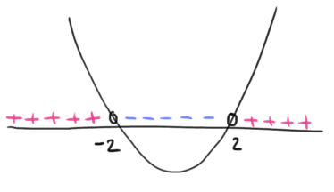

Sia \(y = f(x)\) una funzione definita su un intervallo \([a\,,\,b]\)
\(\boldsymbol{1})\,\,\) continua su un intervallo \([a\,,\,\,b]\).
\(\boldsymbol{2})\,\,\) derivabile in \((a\,,\,\,b)\)
\(\boldsymbol{3})\,\,\) \(f(a) = f(b)\)
Allora \(\exists c \in (a\,,\,b)\) tale che \(f'(c) = 0\)
Interpretiamo cosa afferma il teorema
Per la dimostrazione del teorema fate rifermento al libro di testo: pagg. 1693 e 1694.
Esercizio 1
Svolgere l'esercizio n° 82 pag. 1712
Studiare l'esecizio guida n° 83 pag. 1712
Svolgere gli esercizi n° 87, 88, 89 pag. 1713
Svolgimento n° 87
Svolgimento n° 88
Mostriamo che la funzione
\[
f(x) = x^2 +2x +3
\]
soddisfa le ipotesi del teorema di Rolle in \([-3\,,\,1]\).
Dominio, continuità e derivabilità
La funzione è polinomiale, quindi il suo dominio è \(\mathbb{R}\) ed è ivi continua e derivabile.
Da ciò segue che \(f\) è continua e derivabile in \([-3\,,\,1]\) (ipotesi \(\boldsymbol{1)}\) e \(\boldsymbol{2)}\) del teorema).
Valori negli estremi dell'intervallo
Si ha che
\[
f(-3) = (-3)^2 +2\cdot(-3) +3 = 9 -6 +3 = 6
\]
\[
f(1) = 1^2 +2\cdot 1 +3 = 1 +2 +3 = 6
\]
quindi \(f(-3) = f(1)\), ovvero vale l'ipotesi \(\boldsymbol{3)}\) del teorema.
Segue la tesi: esiste (almeno) un valore \(c \in (-3\,,\,1)\) tale che \(f'(c) = 0\).
Svolgiamo ora il secondo punto dell'esercizio: individuiamo quale sia il punto (o i punti)
di cui l'esistenza è garantita dal teorema.
La derivata di \(f\) è
\[
f'(x) = 2x +2
\]
Risolviamo l'equazione
\[
\begin{align*}
f'(x) &= 0
\\\\
2x +2 &= 0
\\\\
2x &= -2
\\\\
x &= -1
\end{align*}
\]
Si ha quindi che il valore \(c = -1 \in (-3\,,\,\,1)\).
Esercizio 2
Svolgere l'esercizio n° 61 pag. 1711
Svolgimento n° 61
\[
f(x) = \dfrac{\left|x^2 -4\right|}{x -2} + 2x^2
\]
Dominio
L'espressione analitica di \(f\) presenta una divisione, quindi imponiamo la condizione
\[
x -2 \neq 0 \quad \Rightarrow \quad x \neq 2
\]
Il dominio di \(f\) è
\[
D = (-\infty\,,\,\,2) \cup (2\,,\,\,+\infty)
\]
Continuità
La funzione \(f\) è sommando, dividendo e componendo funzioni continue, dunque risulta a sua volta continua nel dominio \(D\).
Il termine in rosso è una funzione composta.
Si ha
\[
\begin{align*}
\color{red}{}\left|x^2 -4\right|' \color{gray}{}
&= \dfrac{\left|x^2 -4\right|}{x^2 -4} \cdot (x^2 - 4)' =
\\\\
&= \color{red}{}\dfrac{\left|x^2 -4\right|}{x^2 -4} \cdot 2x
\end{align*}
\]
Il termine in rosso è una funzione composta.
Si ha
\[
\begin{align*}
\color{red}{}\left|x^2 -4\right|' \color{gray}{}
&= \dfrac{\left|x^2 -4\right|}{x^2 -4} \cdot (x^2 - 4)' =
\\\\
&= \color{red}{}\dfrac{\left|x^2 -4\right|}{x^2 -4} \cdot 2x
\end{align*}
\]
La derivata è
\[
f'(x) = \dfrac{\left|x^2 -4\right|}{x^2 - 4} + 4x
\]
Osserviamo che la funzione \(\frac{\left|x^2 -4\right|}{x^2 - 4}\) ci restituisce il segno di \(x^2 -4\), che è

Punti di non derivabilità
Controlliamo se esistono punti del dominio \(D\) di \(f\) dove la definita la derivata \(f'\) non è definita.
La derivata è definita se il denominatore della sua espressione analitica
\[
x^2 - 4 \neq 0 \,\,\Rightarrow\,\, x^2 \neq 4 \,\,\Rightarrow\,\, x \neq \pm 2
\]
In \(x = 2\) la funzione non è definita, quindi non è neanche derivabile.
Prendiamo in considerazione \(x = -2\) che appartiene al dominio di \(f\).
Calcoliamo le derivate sinistra e destra in corrispondenza di \(x = -2\), considerando che siamo sotto le ipotesi
del criterio di derivabilità.
\[
\begin{align*}
f'_{-}(-2)
&= \lim_{x \to -2^{-}} f'(x) =
\\\\
&= \lim_{x \to -2^{-}} \color{blue}{}\underbrace{\color{black}{}\dfrac{\left|x^2 -4\right|}{x^2 - 4}}\color{black}{} + 4x =
\\\\
&= \color{blue}{}\underbrace{\color{black}{}1}\color{black}{} + 4\cdot (-2) = -7
\end{align*}
\]
\[
\begin{align*}
f'_{+}(-2)
&= \lim_{x \to -2^{+}} f'(x) =
\\\\
&= \lim_{x \to -2^{+}} \color{blue}{}\underbrace{\color{black}{}\dfrac{\left|x^2 -4\right|}{x^2 - 4}}\color{black}{} + 4x =
\\\\
&= \color{blue}{}\underbrace{\color{black}{}-1}\color{black}{} + 4\cdot (-2) = -9
\end{align*}
\]
Concludiamo che \(x = -2\) è un punto angoloso